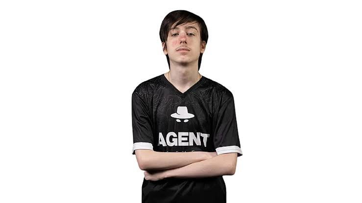
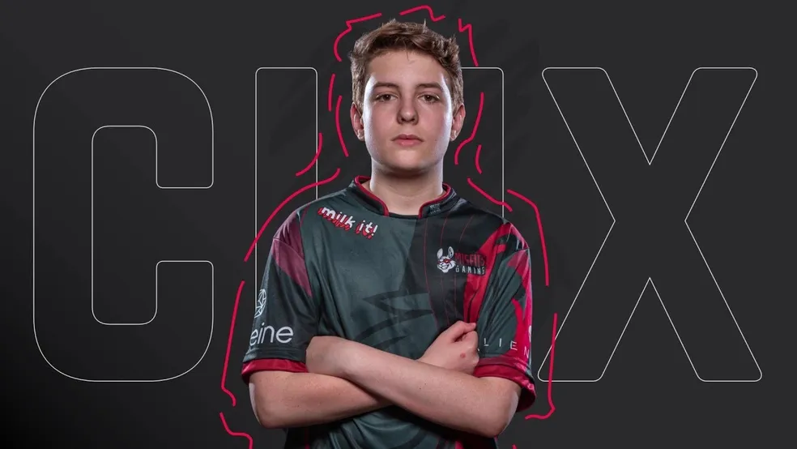
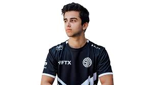

BLACKOUTZ

BlackoutZ, cujo nome real é Patrick Garcia da Silva, é um dos mais reconhecidos jogadores de Fortinate no Brasil. Com uma forte presença nas plataformas de streaming, ele conta com 1,1 milhão de inscritos no YouTube e 1,8 milhão de seguidores no Twitch. Ele começou a ganhar destaque na cena competitiva em 2019, com vitórias e boas colocações em torneios importantes, como a Fortnite Champion Series (FNCS). BlackoutZ acumulou mais de $56 mil em prêmios ao longo de sua carreira, com seu maior prêmio individual sendo $12 mil por um 3º lugar na FNCS: Season X - Grand Finals. Ele também é conhecido por seu desempenho na América do Sul, onde participou de várias competições de alto nível, incluindo a Fortnite World Cup de 2019. Além da competição, BlackoutZ se destaca como criador de conteúdo, onde compartilha dicas e transmissõe ao vivo para uma vasta audiência apaixonada por Fortinate.
Peterbot
Peterbot, cujo nome verdadeiro é Peter Kata, é um jogador profissional de Fortnite nascido em 20 de junho de 2007, atualmente com 17 anos. GRÁFICOS DE ESPORTS Em 2024, destacou-se no cenário competitivo ao lado de seu parceiro Pollo, vencendo o FNCS Global Championship em setembro, com três vitórias consecutivas na final e um prêmio de 400 mil dólares. GENIALMENTE Atualmente, Peterbot integra a equipe Team Falcons. GRÁFICOS DE ESPORTS Ao longo de sua carreira, acumulou ganhos de aproximadamente 653.724 dólares em prêmios. GRÁFICOS DE ESPORTS Para os fãs que desejam aprimorar suas habilidades, há mapas de treinamento inspirados em Peterbot disponíveis no Fortnite, como o "PETERBOT 1v1" e o "PETERBOT FREEBUILD MAP"
CLix
Clix, cujo nome verdadeiro é Cody Conrod, é um jogador profissional de Fortnite e streamer americano, nascido em 7 de janeiro de 2005, atualmente com 20 anos. GRÁFICOS DE ESPORTS Ele ganhou destaque no início de 2019 ao se juntar à Misfits Gaming e se classificar para a Fortnite World Cup tanto no modo solo quanto em duplas com Sceptic.
EpikWhale
EpikWhale , cujo nome verdadeiro é Shane Cotton, é um jogador profissional de Fortnite dos Estados Unidos e um dos competidores mais renomados da história do jogo. Ele é conhecido por sua consistência, habilidade estratégica e performances impressionantes em torneios, incluindo a Fortnite World Cup e outros eventos de alto nível.EpikWhale é extremamente reconhecido como um dos melhores jogadores de todos os tempos no Fortnite . Sua permanência e consistência em um cenário tão competitivo são notáveis, e servem de inspiração para novos jogadore
Felipersa

Felipe "Felipersa" Alves de Cruz, nascido em 10 de fevereiro de 2001, é um jogador profissional brasileiro de Fortnite , atualmente representando o Team Liquid . LIQUIPEDIA Conhecido por suas habilidades de competência e consistência no cenário competitivo, Felipersa conquistou diversas colocações de destaque em torneios de alto nível.elipersa, em parceria com EdRoadToGlory, alcançou o 1º lugar , garantindo um prêmio de US$ 10.000 .